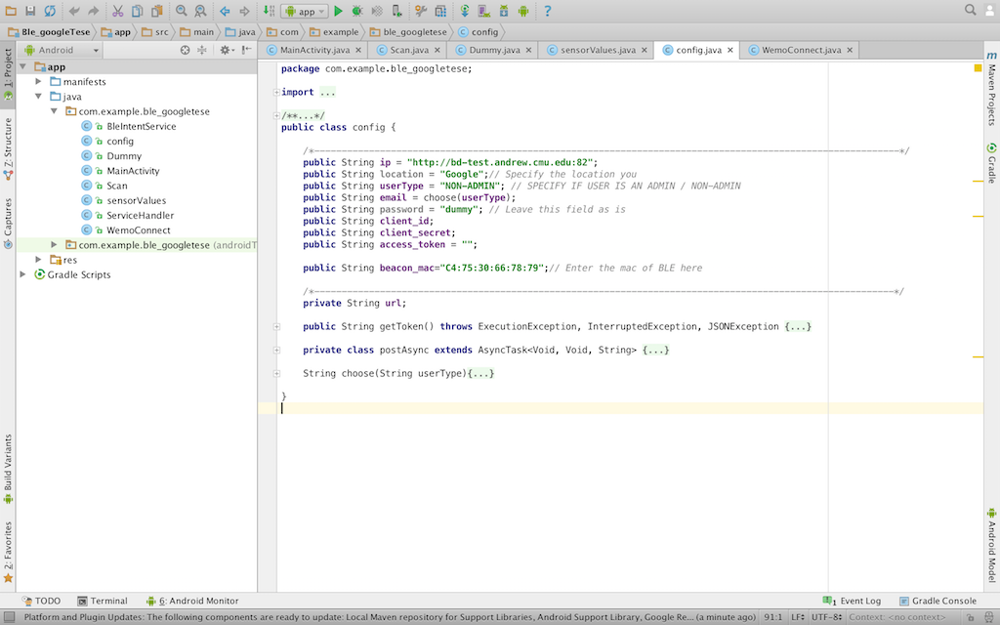
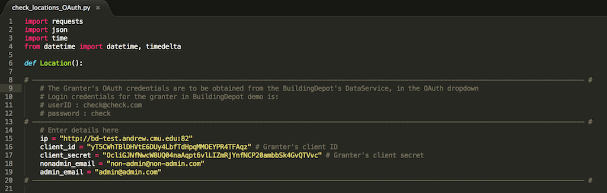

Here you are at the Quick start panel. This page shows you how to get the Dynamic Access Control Demo working right out of the box, with fewest possible steps.
Things you need:
- Two android smart phones with API 20 or higher
- BLE Beacon (its MAC ID)
First Step:
- Install BuildingDepot along with the pre-configured image of BuildingDepot demo database, which holds all the demo buildings and tags, that are essential for this demo to work
- Place a BLE beacon in your Location
Configuring the APK’s:
- Download the Giotto and Ble_Google_tese APK’s from: https://github.com/IoT-Expedition/Giotto-Dynamic-Access-Control
- Open them on Android Studio or Eclipse. Preferably Android Studio
- Navigate to config.java file
- Edit these fields:
- ip - Give the URL on wich you have BuildingDepot installed (Please also specify the PORT of dataservice)
- location - Enter a location your sensors are in
- userType – On one phone, specify as ADMIN and NON-ADMIN on the other phone
- beacon_mac – Give your BLE beacon’s MAC ID

- Download both the APK’s after the edits into both the phones, with one as ADMIN and the other as NON-ADMIN
Configuring the Permission Granter:
The Permission granter script is the python script by name "check_locations_OAuth.py". This file can be found in the Github repo :
https://github.com/IoT-Expedition/Giotto-Dynamic-Access-Control
Download this file onto the server hosting Building Depot. Edit the below field:
- ip - Give the URL on wich you have BuildingDepot installed (Please also specify the PORT of dataservice)

Final Steps:
Do this only after you have completed all the above steps !!!
- Run the newly configured "check_locations_OAuth.py"
- Using the GIOTTO app:
- Open the App on both the ADMIN and NON-ADMIN phones
- Test case:
- Login on the NON-ADMIN phone. Select Location "Google" from the dropdown menu. It shows "Not Authenticated to view this List"
- Now, Login over the ADMIN phone and select Location "Google". The ADMIN would be able to view a list of sensors in this Location
- Once admin has selected Location "Google", refresh the NON-ADMIN's GIOTTO app with the refresh button on the top right corner of screen. The page gets updated with a list of sensors that the ADMIN can view
- Select Location "Random" on ADMIN's phone and refresh the NON-ADMIN's phone. The list disappears and shows "Not Authenticated to view this List"
- Using the BLE_GOOGLE_TESE app:
- Open the App on both the ADMIN and NON-ADMIN phones
- Test case:
- When ADMIN is not near the beacon's range, the list on NON-ADMIN's app shows "Not Authenticated to view this List"
- Now, bring the ADMIN closer to the beacon. ADMIN will be able to view the sensors in his location
- Refresh the NON-ADMIN's app with the refresh button on the top right corner of the page and would be able to view the list of sensors in that beacon Location
- Remove the ADMIN away from the beacon and again refresh the NON-ADMIN's app. This time, it returns "Not Authenticated to view this List"
HAPPY WORKING !!!